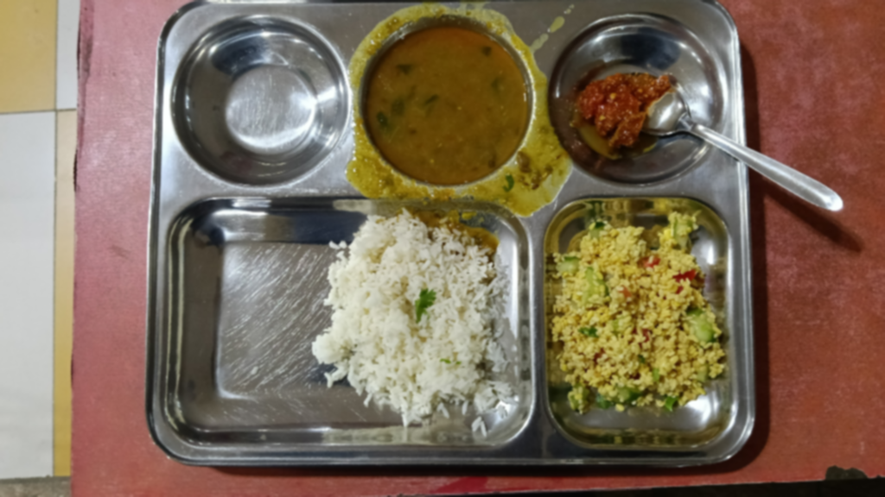
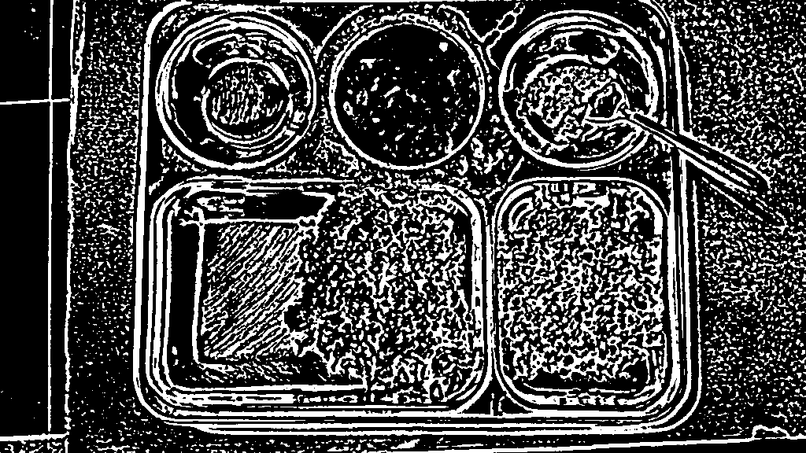
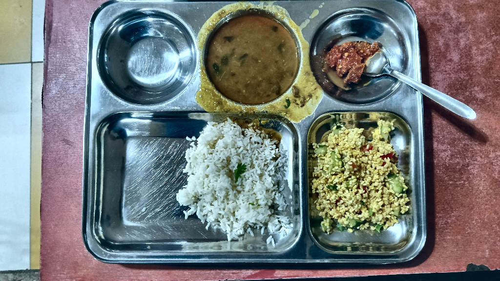
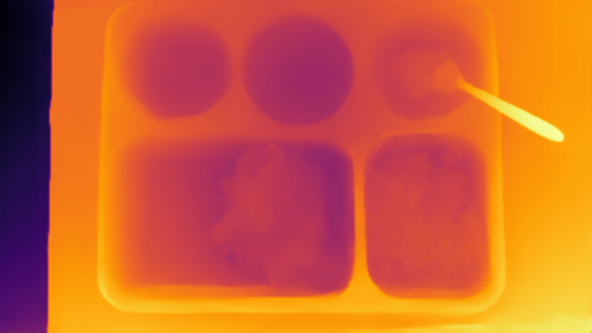
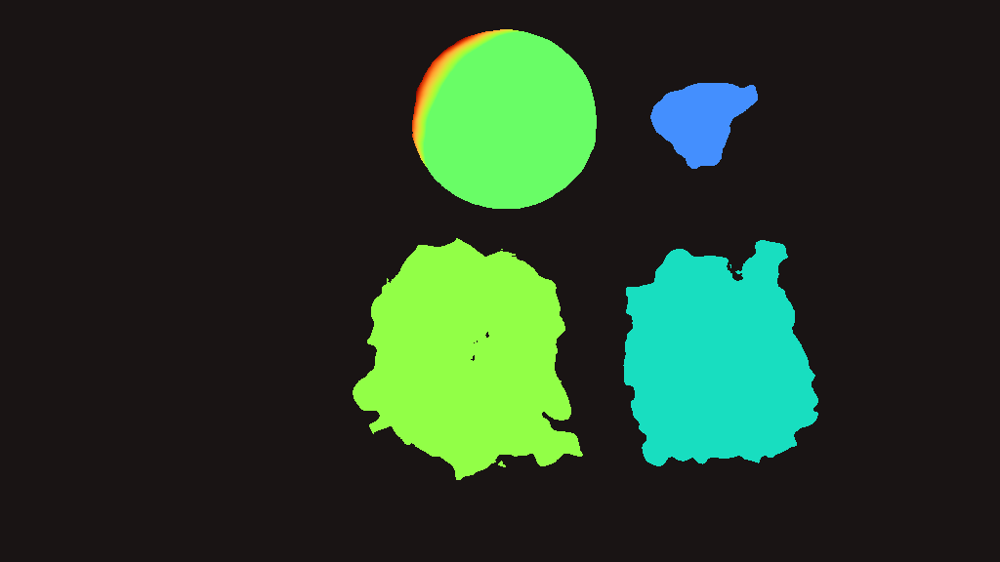
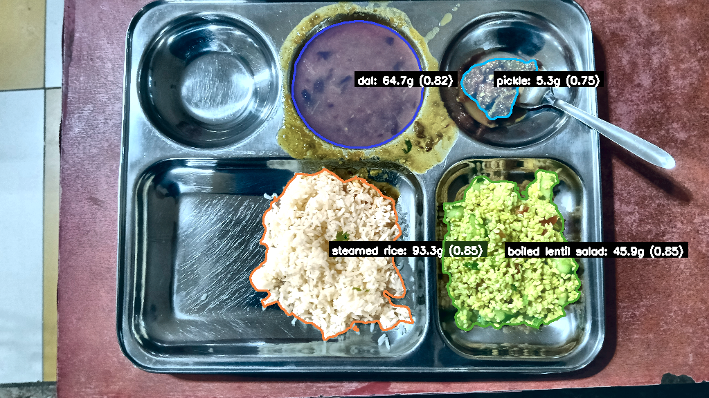

{
"resolution": "3840x2160",
"channels": 3,
"dtype": "uint8",
"expected_items": [
"dal",
"steamed rice",
"boiled lentil salad",
"pickle"
],
"plate_profile": null,
"debug": true
}









[]
{
"item_id": "steamed rice_1",
"area_pixels": 39510,
"estimated_height_cm": 1.688,
"volume_estimate_ml": 94.4,
"density": 0.989,
"mass_g": 93.3,
"class_label": "steamed rice",
"class_confidence": 0.8598,
"depth_stability": 1.0,
"scale_confidence": 0.7,
"composite_confidence": 0.8482,
"prior_applied": true,
"diagnostics": {
"original_sam3_query": "rice",
"candidate_labels": [
"rice"
],
"menu_matching_result": "steamed rice",
"final_food_label": "steamed rice",
"confidence": 0.8598,
"uncertainty": 0.1402,
"original_mask_id": "mask_00",
"grouped_instance_id": "inst_0",
"fragment_count": 1,
"decision_reason": "SINGLE_INSTANCE"
},
"fragment_count": 1
}{
"item_id": "boiled lentil salad_2",
"area_pixels": 35015,
"estimated_height_cm": 1.125,
"volume_estimate_ml": 65.6,
"density": 0.7,
"mass_g": 45.9,
"class_label": "boiled lentil salad",
"class_confidence": 0.8536,
"depth_stability": 1.0,
"scale_confidence": 0.7,
"composite_confidence": 0.8451,
"prior_applied": true,
"diagnostics": {
"original_sam3_query": "chana salad",
"candidate_labels": [
"chana salad"
],
"menu_matching_result": "boiled lentil salad",
"final_food_label": "boiled lentil salad",
"confidence": 0.8536,
"uncertainty": 0.1464,
"original_mask_id": "mask_01",
"grouped_instance_id": "inst_1",
"fragment_count": 1,
"decision_reason": "SINGLE_INSTANCE"
},
"fragment_count": 1
}{
"item_id": "dal_3",
"area_pixels": 27440,
"estimated_height_cm": 1.606,
"volume_estimate_ml": 59.6,
"density": 1.085,
"mass_g": 64.7,
"class_label": "dal",
"class_confidence": 0.7953,
"depth_stability": 1.0,
"scale_confidence": 0.7,
"composite_confidence": 0.8157,
"prior_applied": true,
"diagnostics": {
"original_sam3_query": "brown dal",
"candidate_labels": [
"brown dal"
],
"menu_matching_result": "dal",
"final_food_label": "dal",
"confidence": 0.7953,
"uncertainty": 0.2047,
"original_mask_id": "mask_02",
"grouped_instance_id": "inst_2",
"fragment_count": 1,
"decision_reason": "SINGLE_INSTANCE"
},
"fragment_count": 1
}{
"item_id": "pickle_4",
"area_pixels": 6047,
"estimated_height_cm": 0.637,
"volume_estimate_ml": 5.3,
"density": 1.0,
"mass_g": 5.3,
"class_label": "pickle",
"class_confidence": 0.6754,
"depth_stability": 1.0,
"scale_confidence": 0.7,
"composite_confidence": 0.7517,
"prior_applied": true,
"diagnostics": {
"original_sam3_query": "indian pickle condiment",
"candidate_labels": [
"indian pickle condiment"
],
"menu_matching_result": "pickle",
"final_food_label": "pickle",
"confidence": 0.6754,
"uncertainty": 0.3246,
"original_mask_id": "mask_03",
"grouped_instance_id": "inst_3",
"fragment_count": 1,
"decision_reason": "SINGLE_INSTANCE"
},
"fragment_count": 1
}

{
"food_items": [
{
"name": "steamed rice",
"volume_ml": 94.4,
"mass_g": 93.3,
"calories": 121.3,
"protein": 2.5,
"carbs": 26.1,
"fat": 0.3,
"confidence": 0.8482,
"class_label": "steamed rice",
"class_confidence": 0.8598,
"top_k": [
{
"label": "steamed rice",
"confidence": 0.8598,
"raw_similarity": 0.8598
}
],
"identification_status": "recognized",
"menu_match": true,
"matched_menu_item": "steamed rice",
"identification_confidence": 0.8598,
"segmentation_confidence": 0.8598,
"association_confidence": 1.0,
"menu_match_confidence": 1.0,
"depth_confidence": 1.0,
"scale_confidence": 0.7,
"diagnostics": {
"original_sam3_query": "rice",
"candidate_labels": [
"rice"
],
"menu_matching_result": "steamed rice",
"final_food_label": "steamed rice",
"confidence": 0.8598,
"uncertainty": 0.1402,
"original_mask_id": "mask_00",
"grouped_instance_id": "inst_0",
"fragment_count": 1,
"decision_reason": "SINGLE_INSTANCE"
},
"fragment_count": 1,
"food_name": "steamed rice",
"instance_count": 1
},
{
"name": "boiled lentil salad",
"volume_ml": 65.6,
"mass_g": 45.9,
"calories": 45.9,
"protein": 3.2,
"carbs": 6.9,
"fat": 0.5,
"confidence": 0.8451,
"class_label": "boiled lentil salad",
"class_confidence": 0.8536,
"top_k": [
{
"label": "boiled lentil salad",
"confidence": 0.8536,
"raw_similarity": 0.8536
}
],
"identification_status": "recognized",
"menu_match": true,
"matched_menu_item": "boiled lentil salad",
"identification_confidence": 0.8536,
"segmentation_confidence": 0.8536,
"association_confidence": 1.0,
"menu_match_confi[
{
"step": "Input",
"message": "Original image saved",
"params": {
"resolution": "3840x2160"
},
"elapsed_s": 0.326,
"input_file": null,
"output_file": "original.png",
"timestamp": "2026-11-12T18:59:42.131853"
},
{
"step": "Pipeline",
"message": "Step 1 — Preprocessing & Perspective Warp",
"params": {},
"elapsed_s": null,
"input_file": null,
"output_file": null,
"timestamp": "2026-11-12T18:59:42.131853"
},
{
"step": "Quality Gate",
"message": "PASS",
"params": {
"blur_score": 178.62,
"tilt_deg": 45.0
},
"elapsed_s": null,
"input_file": null,
"output_file": null,
"timestamp": "2026-11-12T18:59:42.406096"
},
{
"step": "Preprocessing",
"message": "Resize applied",
"params": {
"original": "3840x2160",
"target_long_edge": 1024,
"scale": 0.2667
},
"elapsed_s": 0.0007,
"input_file": null,
"output_file": "01_resized.png",
"timestamp": "2026-11-12T18:59:42.438868"
},
{
"step": "Preprocessing",
"message": "Gaussian blur applied",
"params": {
"kernel": 5
},
"elapsed_s": 0.0005,
"input_file": null,
"output_file": "02_denoised.png",
"timestamp": "2026-11-12T18:59:42.467872"
},
{
"step": "Preprocessing",
"message": "LAB color normalization applied",
"params": {},
"elapsed_s": 0.0168,
"input_file": null,
"output_file": "03_color_normalized.png",
"timestamp": "2026-11-12T18:59:42.516465"
},
{
"step": "Preprocessing",
"message": "CLAHE contrast enhancement applied",
"params": {
"clip_limit": 2.0,
"tile_grid": "8x8"
},
"elapsed_s": 0.0033,
"input_file": null,
"output_file": "04_contrast_enhanced.png",
"timestamp": "2026-11-12T18:59:42.551336"
},
{
"step": "Preprocessing",
"message": "Canny edge detection",
"params": {
"low": 50,
"high": 150
},
"elapsed_s": 0| Step | Message | Params | Time |
|---|---|---|---|
| Input | Original image saved | {"resolution": "3840x2160"} | 0.3260s |
| Pipeline | Step 1 — Preprocessing & Perspective Warp | — | — |
| Quality Gate | PASS | {"blur_score": 178.62, "tilt_deg": 45.0} | — |
| Preprocessing | Resize applied | {"original": "3840x2160", "target_long_edge": 1024, "scale": 0.2667} | 0.0007s |
| Preprocessing | Gaussian blur applied | {"kernel": 5} | 0.0005s |
| Preprocessing | LAB color normalization applied | — | 0.0168s |
| Preprocessing | CLAHE contrast enhancement applied | {"clip_limit": 2.0, "tile_grid": "8x8"} | 0.0033s |
| Preprocessing | Canny edge detection | {"low": 50, "high": 150} | 0.0097s |
| Preprocessing | Warp skipped (no 4-pt contour) | {"warped": false} | — |
| Preprocessing | Complete | {"output_size": "1024x576"} | 0.4666s |
| Pipeline | Step 2 — Compartments & Scale | — | — |
| Compartment Detection | Detected 0 compartments | {"min_area_frac": 0.02, "max_area_frac": 0.9, "compartment_count": 0} | 0.0079s |
| Scale Calibration | Fallback to bbox-based calibration | {"cm_per_pixel": 0.04081, "method": "bbox"} | — |
| Compartment Detection | Scale computed | {"cm_per_pixel": 0.04081, "pixel_area_cm2": 0.00166536, "compartments": 0, "scale_confidence": 0.7} | 0.0524s |
| Pipeline | Step 3 — Depth Estimation | — | — |
| Depth Estimation | Depth Anything depth map computed (smoothed) | {"device": "cuda", "is_metric": true, "shape": [576, 1024], "min": -105.811, "max": -51.924} | 0.6983s |
| Depth Normalization | Surface normal plane subtracted from depth | {"baseline": -74.46, "fitted_plane": true, "is_metric": true} | 0.0180s |
| Depth Metric [cm] | Metric depth height in cm directly computed | {"cm_per_pixel": 0.04081, "min_cm": 0.0, "max_cm": 15.0, "mean_cm": 3.32} | 0.0031s |
| Depth Estimation | Complete | — | 0.7723s |
| Pipeline | Step 4–6 — SAM 3 Food Identification & Segmentation | — | — |
| SAM3 | Identified 4 food items (4 recognized, 0 unlisted, 0 uncertain) | — | 13.9250s |
| Pipeline | Step 7 — Volume & Mass Estimation | — | — |
| Volume Estimation | Computed mass for 4 items | {"total_items": 4} | 0.0162s |
| Pipeline | ✅ Pipeline complete | {"total_food_items": 4, "avg_confidence": 0.8152, "scale_method": "bbox"} | 15.6480s |